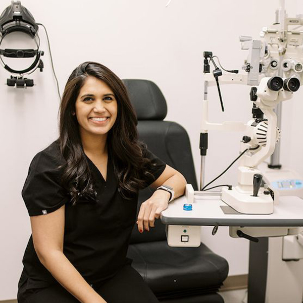

Local Meta ads
Reach nearby people on Facebook and Instagram.
A custom audit / Neuro-Vision
We’re Vessel Archive, a local Sacramento marketing team.
A short plan for Neuro-Vision & Rehabilitation Center.
Reach nearby people on Facebook and Instagram.
Real videos, photos and clear messages.
Get found through your Google Business Profile, site and blogs.
What you do well
Your site makes the specialty and clinicians visible. It explains that staff confirm appointment requests, and the current address matches Google.
There is a lot to build on. Here’s what we found.
Official website ↗
What we found / 1 of 3
The homepage has no clinician video. Visitors cannot watch a short introduction here before deciding to request an appointment. Homepage only; videos elsewhere were not ruled out. Website check ↗
The homepage title leads with “Optometrist in Folsom”. It may undersell your specialty to prospective patients. Specialty pages already exist; no ranking loss measured. Website check ↗
Homepage business-data blocks list 1130/Suite 138 and 1180/Unit 240; two directories list 1130. Conflicting signals could send patients elsewhere. Visible site and Google match 1180; one code block also has a template URL. Website check ↗
What we found / 2 of 3
The appointment page says staff will confirm requests, without saying when. Patients may keep looking while unsure what happens next. No request submitted or response time tested. Request page ↗
Google’s October 20 report showed 3.8-second main-content loading across 28 days of real visits. Loading delay adds a booking hurdle. Site-wide summary, not every visit. Separate simulated slow-4G homepage test: 9.4 seconds. Google speed report ↗
Some homepage service links literally say “[LINK]”, without an extra accessible name. People listening to links may not know which leads to the care information they need. Service links ↗
What we found / 3 of 3
Our October 20 browser check showed “Profile isn’t available” for the homepage-linked account. Visitors seeking more information may hit a dead end. Current ownership and permanent removal remain unconfirmed. Linked profile ↗
Google Analytics appeared on the homepage; Meta and Google Ads tags did not. Unmeasured enquiries could misguide ad decisions. Private/server-side reporting unknown. Patient details must stay out of ad platforms. Website check ↗
How we would help / 1 of 2
Film approved introductions and first-visit answers with staff and empty spaces. Use light video previews, captions and written summaries.
Refine homepage search wording and links to the existing specialty pages. Keep medical claims accurate and clinician-approved.
Confirm the address and current Instagram account. Correct business-data fields, request directory updates and replace unavailable profile links only after ownership is confirmed.
How we would help / 2 of 2
Publish a response window the team can meet, explain how confirmation works and give a phone option for booking questions.
Improve the main loading delays, replace “[LINK]” with each service name and test phone, keyboard and screen-reader use.
Review the current reports first. Agree privacy-safe counts for calls and requests, without sending patient details or health-based audiences to ad platforms.
Ideas for your next shoot
A clinician explains what to bring, how a request is confirmed and what the first appointment covers.
A short introduction answers one common question, using approved language without promising a treatment result.
Show the entrance, parking and Suite 240, using staff and empty spaces with no patient details visible.
A proposed starting plan / 1 of 2
We propose scripting, shooting and launching your first clinician ads within the first couple of weeks, while rebuilding your website and setting a clear brand direction.
Use privacy-safe totals to learn which videos, offers and audiences bring real calls and appointment requests. Cut what does not help, sharpen the message and point the ads at the new site. Keep patient details out of ad platforms.
Proposed scope and timing, agreed together with required approvals.
A proposed starting plan / 2 of 2
Make new content around what worked, refresh the ads and tighten the site so more clicks can become patients.
Then repeat each month: shoot, launch, learn, improve.
Proposed scope and timing, agreed together with required approvals.
From one local team to another

Whether we work together or not, we wanted you to have this. We love seeing Sacramento-area businesses succeed. Happy to talk it through, with no pressure.